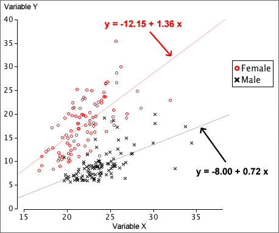

Least squares in each group
We can separately examine the relationship between X and Y in each group (or equivalently for each value of a categorical variable, Z). If the relationship between X and Y is different in the different groups, this should lead to more accurate predictions of Y from X.
A regression line can be separately fitted by least squares in each group.
